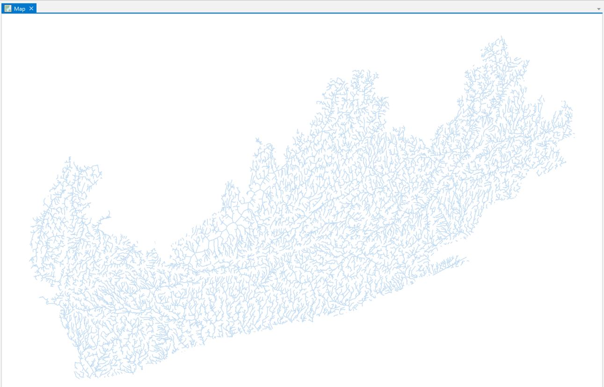
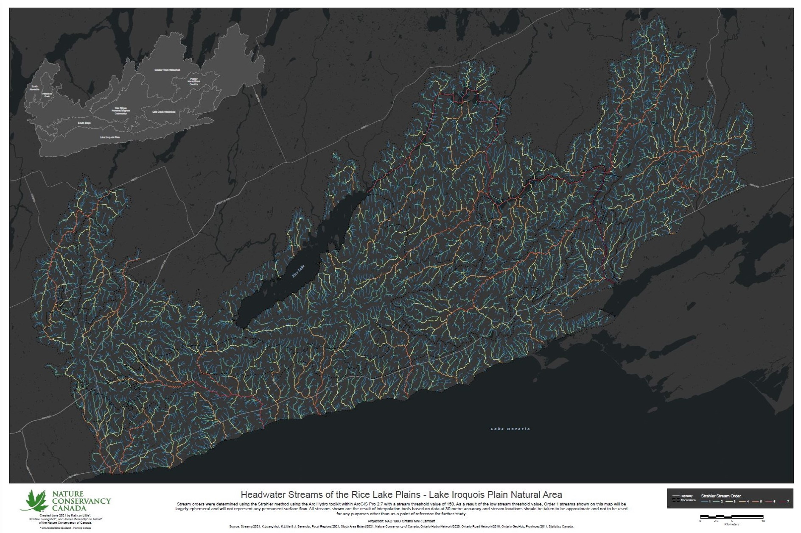
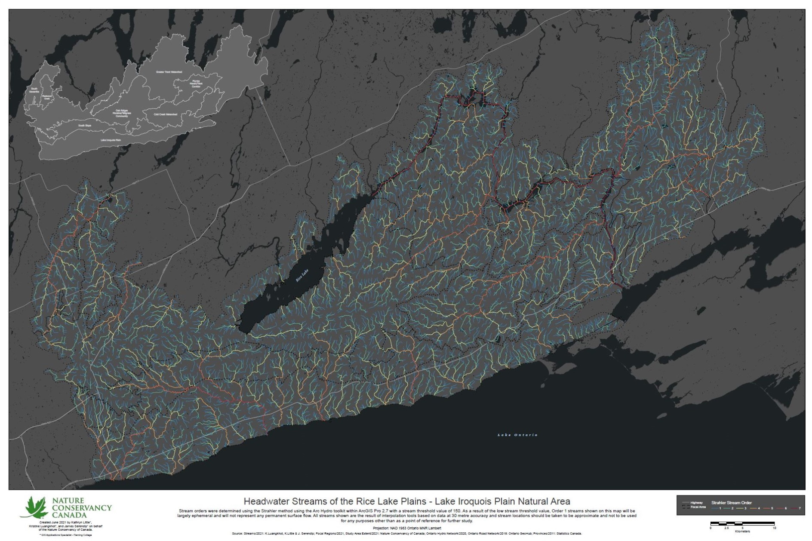

Headwater streams, custom script tools, poster map and web application delivered to the client.
Photo Credit: Chelsea Marcantonio via the Nature Conservancy of Canada
Hydrological Modelling Results
ArcGIS StoryMaps was investigated by Kathryn as a possible solution to accompany the ArcGIS
Experience Builder application. This was done in order to avoid some of the bugs that were being discovered while working
with Experience Builder. While working with StoryMaps, the biggest limitation that was noticed was the type of content
that can be included in the solution. StoryMaps seems to be an optimal way to share photo and video content along with
basic web maps and text content. StoryMaps also has the ability to embed html content, which was experimented with using
the NCC website, however lacks the functionality to do anything more technical. The group decided to not proceed with
StoryMaps any further past this point, deciding that the functionality of the web app should be prioritized.

Trace Downstream and Upstream Script Tools
Exploring Experience Builder, the team could quickly see that it was a viable option for our
intended outcome of an app that presents a dynamic map of our study area indicating headwaters and helping the user
trace downstream flow and connected stream segments. Experience Builder is extremely powerful with many built-in
templates and widgets that can provide all sorts of functionality. The drawback is that with all of these options, it
is fairly complex upon first approach. The tools and the various ways they can be customized are not immediately intuitive.
Consequently, the team explored multiple approaches to using Experience Builder. We explored many different templates, and
learned how to use many of the available widgets.
One piece of functionality we liked was the ability to have multiple pages in one experience.
This gave us the opportunity to create an experience that looks like a website where the first page is a project
introduction (a "Home" page) and the second page is the actual application. This was done by embedding a previous application made in
Experience Builder into a new web experience. Below are some screen captures of our prototype web experiences.
Large Format Poster Map
To explore the power of ArcGIS Experience Builder, ArcGIS Experience Builder Developer Edition was
installed on James and Kristine's computers. Since the server can be installed using a personal ArcGIS Developers
account, this offers a testing environment for custom development that is not connected to a larger
organization. Furthermore, experiences built with the Developer Edition will not disappear once a user
is no longer part of an organization. Drawbacks include having to start the client and server
every time you want to use the Developer Edition, inability to share an experience easily with external
users and having to learn TypeScript and React to create custom widgets. Therefore, if the client does
not have a requirement for custom development, there is no need to install ArcGIS Experience Builder
Developer Edition and ArcGIS Experience Builder will be able to meet all the project requirements.


Web App: ArcGIS Experience Builder
While ArcGIS Experience Builder has the ability to create web applications that look like webpages (i.e. an experience
can contain a page with all the front-end web design elements), the client did not specify that everything must be hosted in Experience Builder.
A Hub Site was developed with ArcGIS Hub to create a web application that resembles a webpage with background information about the project and
study area. Advantages of Hub include more customization options available for the layout and seamless integration of ArcGIS applications like
web maps, web experiences and graphs. It was discovered after the Hub app was thought to be completed that changes in one of the web maps (adding
layers in an attempt to improve Query widget functionality) caused the stream order filtering to no longer function properly. However this was
an easy fix simply by removing those layers from the web map, and then the filter settings were re-worked to use buttons instead of tabs to select
groupings of stream orders. Always beta-test everything before final submission!
One piece of functionality we liked was the ability to have multiple pages in one experience.
This gave us the opportunity to create an experience that looks like a website where the first page is a project
introduction (a "Home" page) and the second page is the actual application. This was done by embedding a previous application made in
Experience Builder into a new web experience. Below are some screen captures of our prototype web experiences.
One piece of functionality we liked was the ability to have multiple pages in one experience.
This gave us the opportunity to create an experience that looks like a website where the first page is a project
introduction (a "Home" page) and the second page is the actual application. This was done by embedding a previous application made in
Experience Builder into a new web experience. Below are some screen captures of our prototype web experiences.
File Geodatabase and Supporting Files
In the course of this exercise, we found the exploration of ESRI web development solutions very fruitful and enlightening.
We had originally thought that StoryMaps might be a sufficient and easy pathway for developing a web aplication along the lines of our needs
for our collaborative project mapping headwaters, but eventually settled on a preference for the enhanced functionality of Experience Builder.
Since our focus is not on data analysis, we determined dashboards would not add to what we are trying to accomplish, and we found WebApp Builder
to be basically a watered-down version of Experience Builder, and so we went with that. Since our collaborative project client is familiar with,
and uses, ESRI products, we did not pursue open source options. We now feel like we have a clear path forward to produce a high-quality dynamic
Web Map Application that will be valuable to our clients' conservation efforts, built in ESRI Experience Builder, with the ability to highlight and
immediately identify, headwater streams, and their interconnected hierarchy of down-stream flow. And creating a platform in Hub to document
our process has shown that Hub is relatively easy to use and a good way to showcase other ESRI web applications organized with explanatory
text and images.